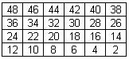

|
Ejercicios
de repaso
|
|
Cadenas,
Matrices y Archivos de texto
|

Objetivos:
- Que apliques los conocimientos adquiridos en el último
periodo.
- Que ejercites la habilidad de hacer frente a los mensajes de error
que envía la herramienta de desarrollo.
- Que desarrolles habilidades de sociabilización mediante
el proceso de trabajo en equipo.
- Que ayudes a tus compañeros a encontrar la mejor solución
a los programas.
.
|

Forma de trabajo:
Actividad en equipos
colaborativos e individual
|

Tiempo estimado:
90 minutos
|

Instrucciones:
- Intégrate con
tu equipo colaborativo y sigue las indicaciones del profesor.
- Junto con tus compañeros
de equipo, analiza cada uno de los ejercicios que se presentan a continuación.
Identifiquen, en equipo, cual sería el algoritmo para la solución
de cada uno de los ejercicios. Recuerden documentarlos en sus hojas membretadas.
.....
|
Ejercicio 1
El
procedimiento llenaMatrizCaracteres,
que recibe como parámetro una matriz de caracteres de 4 renglones
por 6 columnas; y almacena en cada una de las localidades de la matriz una
letra consecutiva de la 'a' hasta la 'x' iniciando en la localidad
3,0. Es decir, después de llamar al procedimiento llena_matriz, en
la matriz deberán estar los siguientes valores:
Ejercicio 2
El
procedimiento imprimeMatrizCaracteres,
que recibe como parámetros una matriz de caracteres de 4 renglones
por 6 columnas. El procedimiento desplegará en pantalla el contenido
de la matriz.
Ejercicio
3
El procedimiento llenaMatrizNumeros, que recibe como parámetro
una matriz de enteros de 4 renglones por 6 columnas; y almacena en cada una
de las localidades de la matriz un número consecutivo par del 2 al
48 iniciando en la última localidad de la matriz (3,5). Es decir, después
de llamar al procedimiento llena_matriz, en la matriz deberán estar
los siguientes valores:

Ejercicio 4
El procedimiento escribeCadena
que recibe como parámetros una cadena de 50 caracteres y una cadena
de 25 caracteres que contiene la ruta de un archivo de texto. El procedimiento
deberá copiar en mayúsculas y sin espacios carácter por
carácter de la cadena en un archivo de texto.
Por ejemplo:
Si la cadena es:
“Hola a todos”
El archivo de texto
deberá almacenar: HOLAATODOS
Ejercicio 5
El procedimiento copiaInvertido
que recibe como parámetros una cadena de 25 caracteres con la ruta
del archivo de texto origen y una cadena de 25 caracteres con la ruta
del archivo de texto destino. El procedimiento deberá copiar
el contenido del archivo de texto origen al archivo de texto destino invirtiendo
las letras mayúsculas por minúsculas y las letras minúsculas
por mayúsculas. NOTA: Puedes utilizar las funciones toupper( )
o tolower( ) y te puede servir la tabla de códigos ASCII.
.
Tabla de valores ASCII

|